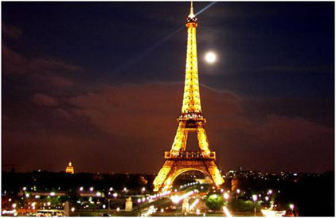

艾菲爾鐵塔
ch03-4

艾菲爾鐵塔從1887年1月27日起建，分為三樓，分別在離地面57.6米、115.7米和276.1米處，其中一、二樓設有餐廳，第三樓建有觀景台，
從塔座到塔頂共有1,711級階梯，共用去鋼鐵7,000噸，12,000個金屬部件，250萬隻鉚釘，模仿人體的骨頭為建，極為壯觀屬於鏤空結構鐵塔，塔高為300公尺，總高320公尺。
1889年5月15日，為給世界博覽會開幕典禮剪彩，鐵塔的設計師親手將法國國旗升上鐵塔的300米高空，由此，人們為了紀念他對法國和巴黎的這一貢獻，特別還在塔下為他塑造了一座半身銅像。
直到2004年1月16日，為申辦2012年夏季奧運會，法國巴黎市政府特意在艾菲爾鐵塔上介紹了其為申奧所做出的準備情況，而艾菲爾鐵塔更成為了該國申奧的「天然廣告」。
這個為了世界博覽會而落成的金屬建築，曾經保持世界最高建築45年，直到紐約克萊斯勒大樓的出現。
艾菲爾鐵塔由250萬個鉚釘連接固定。於塔的四個面上共刻有72個法國科學家、工程師與其他知名人士的名字，居斯塔夫·艾菲爾以此來銘記他們做出的貢獻。[12]。
戰神廣場的另一端有和平門和和平碑，上面用不同的文字寫著「和平」，表達了人們美好的願望。
這是我的首頁
法國
凡爾賽宮
蔚藍海岸